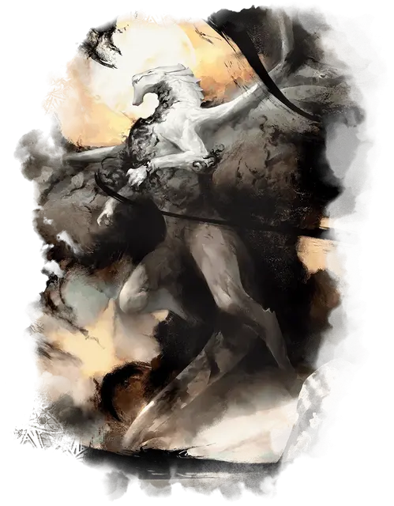

Шадрикс Сильверквилл
Shadrix Silverquill
Громадный Дракон (Бард), нейтральный, именной НИП

Класс Доспеха 21 (природный доспех)
Хиты 363 (22к20 + 132)
Скорость 40 футов, летая 80 футов
| мод | спас | ||
|---|---|---|---|
| СИЛ | 25 | +7 | +7 |
| ЛОВ | 14 | +2 | +9 |
| ТЕЛ | 23 | +6 | +13 |
| мод | спас | ||
|---|---|---|---|
| ИНТ | 18 | +4 | +4 |
| МДР | 18 | +4 | +11 |
| ХАР | 26 | +8 | +15 |
Навыки Восприятие +11, Магия +18, Обман +15, Убеждение +15
Иммунитет к урону излучение, психическая энергия
Чувства слепое зрение 120 футов, пассивное Восприятие 21
Языки Все
Опасность 22 (41000 опыта)
Бонус мастерства +7
Особенности
Легендарное сопротивление (3/день). Если Шадрикс провалит спасбросок, он может вместо этого сделать спасбросок успешным.
Действия
Мультиатака. Шадрикс совершает одну атаку Укусом и две атаки Когтями.
Укус. . Рукопашная атака оружием: +14 к попаданию, досягаемость 15 футов, одна цель. Попадание: 12 (1к10 + 7) колющего урона плюс 4 (1к8) урона излучением.
Коготь. . Рукопашная атака оружием: +14 к попаданию, досягаемость 10 футов, одна цель. Попадание: 10 (1к6 + 7) рубящего урона. Если целью является существо, оно охватывается отчаянием и совершает броски атаки с помехой до конца своего следующего хода.
Дыхание сияющих теней (Перезарядка 5-6). Шадрикс выдыхает вплетенный взрыв ослепительного сияния и пугающих теней 90-футовым конусом. Каждое существо в этой области должно совершить спасбросок Телосложения Сл 21. При провале существо получает 31 (7к8) урона излучением и 31 (7к8) урона психической энергией и становится ослеплённым до начала следующего хода Шадрикса. При успехе существо получает половину этого урона и не ослепляется.
Использование заклинаний. Шадрикс накладывает одно из следующих заклинаний, используя Харизму в качестве базовой характеристики и без использования материальных компонентов (Сл спасброска от заклинаний 23):
• 1/день каждое: тьма [darkness], дневной свет [daylight], гипнотический узор [hypnotic pattern], послание [sending], внушение [suggestion].
Легендарные действия
Шадрикс может совершать 3 легендарных действия, выбирая из указанных ниже вариантов. Лишь одно легендарное действие может быть совершено за раз, и только в конце хода другого существа. Шадрикс восстанавливает истраченные действия в начале своего хода.
Коготь. Шадрикс совершает одну атаку Когтем.
Теневое скольжение (стоит 2 действия). Шадрикс превращается в чернильное облако тени и перемещается на половину скорости полёта, не провоцируя атак, после чего вновь принимает свою истинную форму. Во время этого перемещения он может перемещаться через существ и предметы, как если бы они были труднопроходимой местностью. Если он проходит сквозь существо, оно должно преуспеть в спасброске Телосложения Сл 21, иначе станет ослеплённым до конца своего следующего хода. Если Шадрикс заканчивает это передвижение внутри объекта, он получает 5 (1к10) урона силовым полем и выталкивается в ближайшее свободное пространство.
Вспышка вдохновения (стоит 3 действия). Шадрикс волшебным образом призывает 1к4 талисмана–чернильника [inkling mascot] в незанятых пространствах, которые он может видеть в пределах 60 футов. Чернильники подчиняются его командам и начинают свой ход сразу после него. Пока любой из этих чернильников жив, Шадрикс с преимуществом совершает броски атаки и спасброски. Эти чернильники исчезают через 10 минут, когда Шадрикс умирает или когда он снова использует это действие.
Описание
Столетия назад дракон Шадрикс Сильверквилл овладел магией света и тени, и он объединил эту магию посредством общения. Слова Шадрикса были полны силы, вдохновляя его союзников и деморализуя врагов.
Он основал факультет Сильверквилл на принципах красноречия и лидерства, стремясь подготовить лидеров, которые будут идти вперед, направляя других.